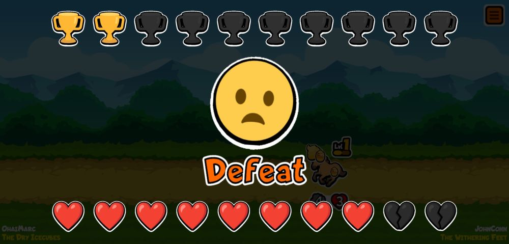
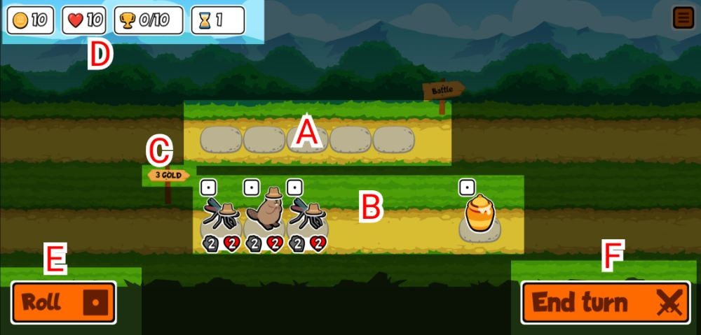
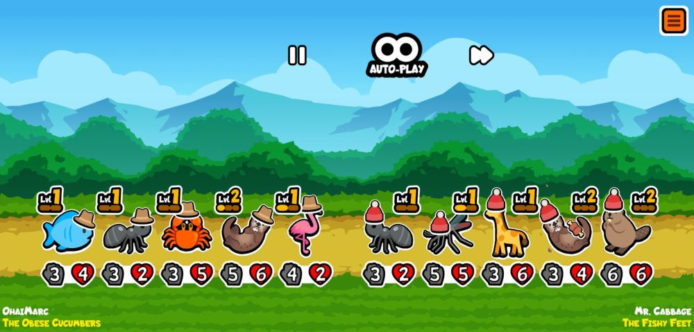

Game Rules
Note: This only applies to the Arena Mode, not the newly released Versus Mode!
Objectives
-
Super Auto Pets consists of two phases: the
shop phase
and the
combat phase.
Each time you end your turn during the shop phase, the combat phase begins.
-
After every two turns your game will go up a Tier.
This means you can purchase stronger
pets and food.
-
You get 1 trophy every time you win, which will be
excahnged to points
at the end of the game.
-
If you are defeated, you lose hearts.
The number of hearts lost inceases with the number of turns.
No hearts are lost and no trophies are won if you draw.
- The game ends when you either lose all 10 hearts or win 10 trophies.
| Turn |
Tier |
No. of Hearts Lost in Defeat |
| 1 - 2 |
1 |
1 |
| 3 - 4 |
2 |
2 |
| 5 - 6 |
3 |
3 |
| 7 - 8 |
4 |
3 |
| 9 - 10 |
5 |
3 |
| 11 onwards |
6 |
3 |

Note: It is extremely difficult to win the game (i.e. get 10 trophies)!
Hence, I have collated some
tips and tricks
for beginners!
Shop Phase
At the start of each turn is the Shop Phase.
You have unlimited time to strategize and purchase pets and food.

-
Lineup
Drag or tap a pet from shop into any of the slots to purchase them. You can have up to 5 pets in your team.
If the shop possesses a pet that you already have on your team, you can level them up by adding on the duplicate pet.
Note that strategically it is not always a good idea to do so.
-
Shop
Here you can purchase pets and food.
You can choose from 3 pets at every turn. When you level up a pet, another pet of a tier higher than your current tier will appear in the shop.
There is only 1 food in the shop for the first 2 turns, then you can choose from 2 food in the subsqeuent turns.
You can read the descriptions of the pets and food by clicking on them.
-
Price
This sign tells you the cost of pets and food, which is usually 3 coins each. You can sell pets for 1-3 coins, according to their level.
-
Stats
This shows the number of coins you have for the turn, the trophies you have won, the number of hearts left, and which turn you are on.
Note that you get 10 coins for each turn and the coins will not carry forward to the next turn. Hence, it is recommended that you use all the coins.
-
Roll
If there is no more pets or food that you want to add, you can roll to generate a new set of items for the shop.
Each roll costs 1 coin. You have to freeze the items that you would like to save to the next roll.
-
End Turn
Once you are satisfied with your team or finished using all your coins you can click this to enter the
Combat Phase.
Combat Phase
Once you have ended your turn, your team will be battling a random opponent.

-
The pets at the front of your team and your opponent's team will attack each other at the same time.
They will deal damage to each other according to their stats. Your pet will faint when it runs out of health.
The team in which all the pets faint first is defeated for that turn.
-
You have to click on the screen for each pet to make its move.
You can speed up the process using the auto-play and/or speed up button.
You can pause the game using the pause button or return to the main menu using the setting button in the corner.
Your game will auto save when you return to the main menu and you can continue the same game.
-
You can choose to abandon the game at the main menu, which will delete the current game progress and you can start a new game.
Note that abandoning too many games in a row will result in your pets wearing a "shame" hat
, which you can only get rid off by completing a game.